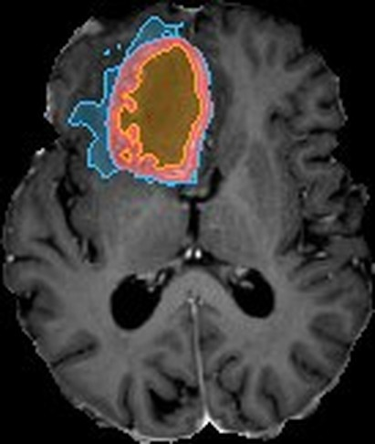
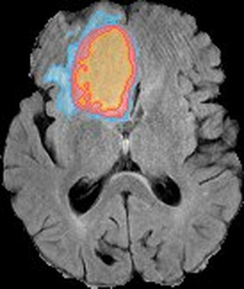
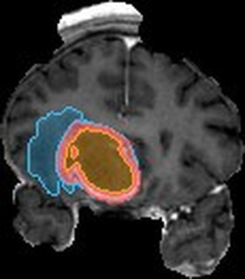

МРТ опухоли — от снимка до персонализированного лечения
Визуализация, сегментация, количественный анализ и моделирование ответа на лечение в едином рабочем пространстве врача.
- 4МРТ-последовательности
T1 · T1-Gd · T2 · FLAIR - 2D + 3DMPR-срезы и объёмная
реконструкция в браузере - Локальнофайлы читаются в браузере
и не уходят на сервер
От МРТ к клиническому решению
В демонстрационном случае можно пройти весь рабочий путь: открыть исследование, проверить сегментацию, оценить динамику и изучить сценарии лечения.
Открыть исследование
Настоящее МРТ в трёх плоскостях и в 3D. Переключайте T1, T1-Gd, T2 и FLAIR, прокручивайте срезы синхронно.
Проверить сегментацию
Запустите анализ, скорректируйте маску кистью и подтвердите результат — статус проверки всегда на виду.
Оценить динамику
Сравните две временные точки: карта роста и уменьшения, таблица объёмов, временная шкала лечения.
Изучить сценарии лечения
Смоделируйте ответ на выбранный план или получите варианты для обсуждения на консилиуме.
Опухоль — по зонам и в деталях
Активную опухоль, некроз, отёк и другие области можно рассматривать отдельно, сопоставлять со снимками и отображать в 2D или 3D.
- Активная опухольусиливающаяся после контраста (T1-Gd)контур ▭
- Некроз / неусиливающееся ядроцентральные зоны без усиленияштрих ▨
- Перифокальный отёкFLAIR-гиперинтенсивная зоназаливка ▤
Цвет дублируется формой: контур, штриховка и заливка — палитра различима при нарушениях цветового зрения.



| Показатель | Базовое | Контроль* | Δ |
|---|---|---|---|
| Вся опухолевая область | — | — | — |
* Контрольная точка синтетическая — построена демонстрационной моделью, чтобы показать сравнение. Требует проверки врачом.
Объёмы и динамика
Пользователь видит количественные показатели опухолевых зон и их изменение относительно предыдущего исследования — с единицами измерения, источником и пометкой о ручной коррекции.
- Объёмы, диаметры, число очагов, локализация
- Сравнение: рядом, разность, карта роста
- Каждое число можно нажать — область подсветится в 2D и 3D
Проверить план или подобрать терапию
Врач может оценить возможный ответ на уже выбранное лечение или запросить несколько обоснованных вариантов для профессионального рассмотрения. Результаты — модельные сценарии, а не назначения.
Провести моделирование лечения
Задайте дозу, фракции, системную терапию и горизонт — получите предполагаемую маску с диапазоном неопределённости, отличимую пунктиром и штриховкой.
Модельный сценарийПодбор терапии
Проверьте исходные данные, запустите подбор — до пяти сценариев с обоснованием, ограничениями, рисками и ссылками на руководства. Без единого «рейтинга 92/100».
Поддержка решения, не назначениеИИ-консультант всегда под рукой
Он помогает разобраться в данных пациента, выполнить действие на сайте и найти медицинскую информацию со ссылками на релевантные источники.
- Всегда показывает, какой контекст ему доступен
- Действия — только после вашего подтверждения
- Литературные сведения отделены от результатов пациента
Единая среда для совместной работы
Каждый специалист подключается на своём этапе, а исследования, сегментации, заключения и решения остаются связаны в одном рабочем процессе.
Технологии помогают. Решение остаётся за врачом
Для каждого результата видны использованные данные, версия модели, ограничения и статус проверки специалистом.
- Данные
- OpenNeuro ds007045 · CC0 · обезличено
- Модель
- SegResNet, BraTS-разметка · маски датасета
- Проверка
- нейрорадиологи авторов набора; в приложении — «требуется проверка врача»
- Версия маски
- v1 · модель → v2 · правки врача
- Прогноз лечения — демонстрационный расчёт, не валидирован клинически
- Только дооперационные МРТ в демо-наборе
- Нет перфузии и DWI/ADC
- Не является медицинским изделием
- Нет кнопки «Применить лечение»
- Подтверждение врача перед протоколом
- Журнал версий и правок маски
- Локальная обработка загруженных файлов
Откройте демонстрационный случай
Настоящее МРТ глиобластомы, 3D-реконструкция и полный рабочий сценарий — за несколько кликов.